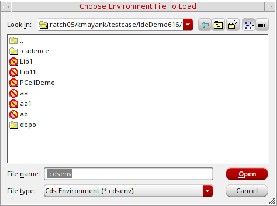

Loading Settings from a .cdsenv file
To load settings from an environment file (.cdsenv), follow these steps:
-
On the Library Manager form, choose File – Load Defaults.
The Choose Environment File To Load form appears. -
(Optional) Use the navigation tools (list box and toolbar buttons) to specify the source directory from which you want to load the settings file.
You can also type a directory path in the Look in field.
If you do not specify a directory path, your home directory is used. - In the File type field, select one of the following file name filters:
-
In the File name field, type the name of the environment settings file you want to load.
Alternatively, you can select the file from the list box above this field. - Click OK.
The Library Manager loads environment settings from the .cdsenv file you specified.
Related Topics
Choose Environment File To Load Form
Return to top